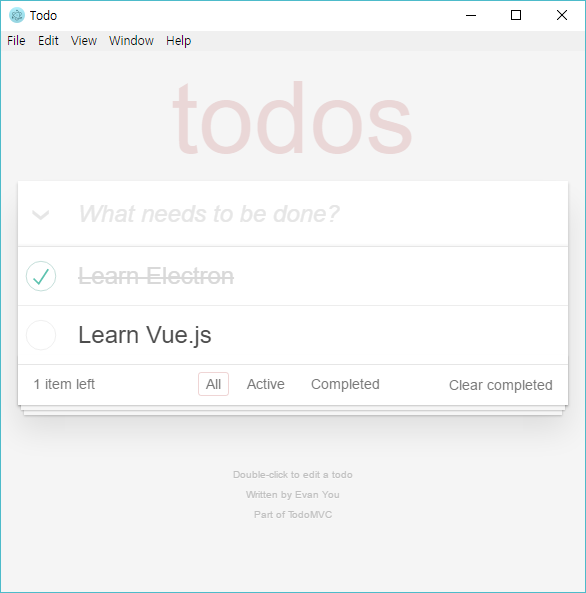

Electron으로 개발 시작하기
Kesus Kim
저는요...
Web Developer
Architect
Hacker-wannabe
Electron으로 개발하는 것
=
커스터마이징 가능한 Chrome 브라우저를
개발 플랫폼으로 사용하는 것
개발 플랫폼으로 사용하는 것
어떤 점이 좋을까요?
HTML 5 + CSS 3 + Chrome + Node !
Web Database, localStorage, WebGL, WebSocket, Notification, Flexbox, Web Animation 등등
새로운, 멋진 웹 기술을 브라우저 걱정 없이 사용할 수 있습니다!
곧 있으면 WebAssembly도 지원될 거에요!
(Chrome version 58 부터, 현재는 version 56)
(Chrome version 58 부터, 현재는 version 56)
Electron의 핵심 이해하기
main process / renderer processMulti-process Architecture
https://www.chromium.org/developers/design-documents/multi-process-architecture
-
main process
- 전체적으로 모든 것들을 관리하는 프로세스
(눈에 안 보임!) - 시스템에 접근할 수 있는 프로세스
- 실제 화면에 보여지는 부분
- Chrome 에서의 각각의 '탭'에 해당
- 시스템에 접근할 수도 있는 프로세스 (권장 X)
renderer process
결국, 웹 앱을 개발하는 거에요.
( + Node.js를 통해서 시스템에 접근하구요!)
( + Node.js를 통해서 시스템에 접근하구요!)
한번 시작해볼까요?

완성품
Electron API에 대한 참조는 여기서 하면 되요!
http://electron.atom.io/docs https://github.com/electron/electron-api-demos어플리케이션을 배포할 때에는 이 패키지를 사용하세요!
https://github.com/electron-userland/electron-builder
다른 JS Framework를 추가하고 싶으면 어떻게 할까요?
아... 이게 엄청나게 복잡합니다.
요즘 프론트엔드에서는 진짜 많이 복잡해요.
Module Bundling이 너무 어려워 ㅠㅠ
요즘 프론트엔드에서는 진짜 많이 복잡해요.
Module Bundling이 너무 어려워 ㅠㅠ
- ES5 기반: 그냥 추가하면 되요!
- ES6/ES7 등 Transpile 기반: 진짜 넘나 어려운것...
그래서 이미 똑똑한 여러 명의 사람들이 해 놓은걸 쓰면 되요!
 : 아직 제대로 된건 없습니다 (ㅠㅠ) 그래도 언젠간 공식으로 지원할 것 같아요!
: 아직 제대로 된건 없습니다 (ㅠㅠ) 그래도 언젠간 공식으로 지원할 것 같아요! : https://github.com/chentsulin/electron-react-boilerplate
: https://github.com/chentsulin/electron-react-boilerplate : https://github.com/SimulatedGREG/electron-vue
: https://github.com/SimulatedGREG/electron-vue : https://github.com/felixrieseberg/ember-electron
: https://github.com/felixrieseberg/ember-electron
Thank you!